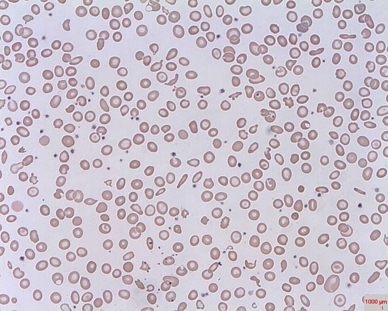
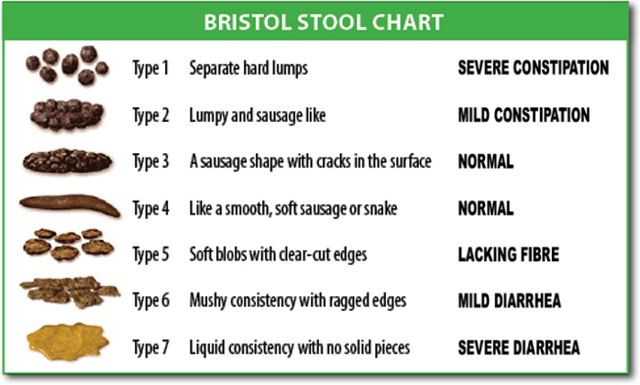
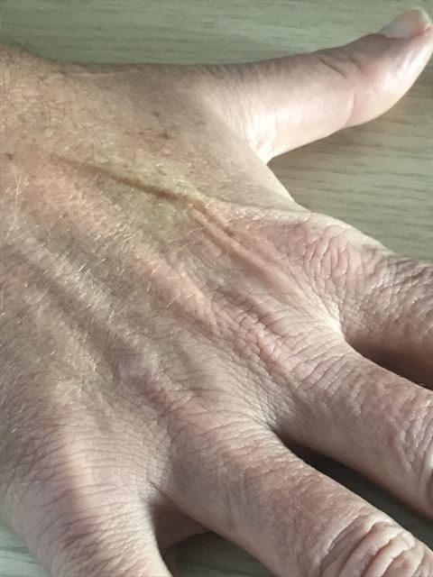
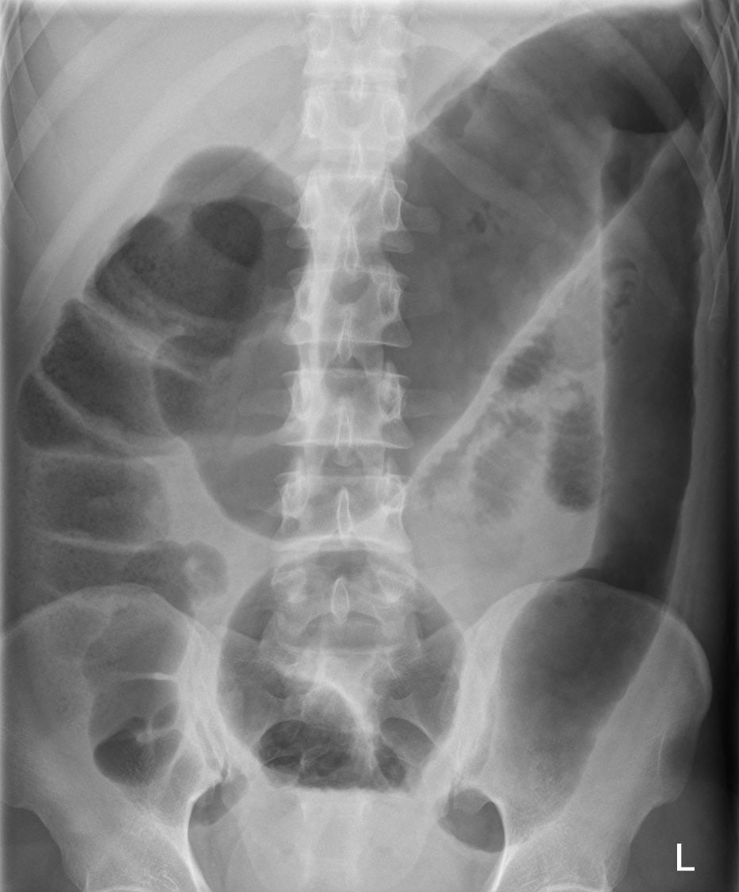

Diarrhée
Du cabinet de médecine de famille aux urgences : la selle liquide qui guérit seule, et les rares qui tuent
Les dix diagnostics en concurrence, du plus fréquent au plus rare
Une diarrhée aiguë guérit le plus souvent sans antibiotique[11]. Le travail consiste donc à repérer, parmi beaucoup d’épisodes viraux, les rares patients qu’une bactérie, une toxine ou une complication colique met en danger. Les dix concurrents ci-dessous suivent la fréquence suisse déclarée, puis le rang argumenté lorsque aucune déclaration n’existe[6].
- DX.1 — Gastro-entérite viralePremier rang : les virus causent plus de 70 % des diarrhées de l’enfant, et le norovirus domine aussi les épidémies de l’adulte[2].
- DX.2 — CampylobactérioseRang 2 : c’est la première zoonose du pays, qui a compté 6 756 infections notifiées à l’OFSP en 2023[6].
- DX.3 — Salmonellose non typhiqueRang 3, deuxième zoonose : 1 823 cas ont été déclarés en 2023, soit 21 pour 100 000 habitants[7].
- DX.4 — Infection à Escherichia coli producteurs de shigatoxineRang 4 : 1 224 infections notifiées en 2023, soit 14 pour 100 000 habitants, un record depuis 1999[8].🚩 E2 SHU
- DX.5 — Toxi-infection à toxine préforméeRang 5 : 40 foyers ont été déclarés en 2023, mais un repas partagé suffit et la plupart des cas isolés ne sont jamais notifiés[9].
- DX.6 — Infection à Clostridioides difficileRang 6, fréquent seulement après un antibiotique ou une hospitalisation récente, ce qui restreint la population exposée[4].
- DX.7 — GiardiaseRang 7, parmi les causes des diarrhées qui persistent au-delà de la phase aiguë[4].
- DX.8 — ShigelloseRang 8, rare dans le pays ; elle se signale par une dysenterie et le schéma suisse la traite à part[5].
- DX.9 — Colite ischémiqueRang 9 : l’ischémie mésentérique représente environ une hospitalisation sur 1 000, surtout après 60 ans[15].
- DX.10 — Mégacôlon toxiqueRang 10, rare, puisqu’il complique une colite inflammatoire ou infectieuse déjà installée[16].🚩 E1 perforation
Le classement de gravité ne suit pas celui de la fréquence, puisque le mégacôlon toxique peut perforer en quelques heures alors que le syndrome hémolytique et urémique s’installe sur plusieurs jours[16]. On garde donc deux drapeaux : E1 pour la distension colique toxique, E2 pour la shigatoxine qui menace le rein[8].
| Concurrent | Indice qui oriente | Examen qui tranche | Mécanisme | Conduite | Rang E |
|---|---|---|---|---|---|
| DX.1 Gastro-entérite virale | Vomissements, selles aqueuses, entourage atteint. | Aucun chez l’adulte sain ; PCR si un foyer doit être nommé. | Le virus abîme l’épithélium du grêle, qui sécrète. | Boire, puis reprendre l’alimentation. | Aucun. |
| DX.2 Campylobactériose | Volaille, fièvre, crampes, parfois du sang. | Culture ou PCR des selles. | La bactérie envahit la muqueuse du côlon. | Azithromycine si la forme est sévère. | Aucun. |
| DX.3 Salmonellose non typhique | Œufs, fièvre élevée, douleur diffuse. | Coproculture, hémocultures si le patient est fébrile. | L’invasion peut gagner le sang. | Antibiotique seulement si la forme est sévère. | Aucun. |
| DX.4 Infection à Escherichia coli producteurs de shigatoxine | Sang dans les selles, fièvre modeste. | Recherche ciblée de shigatoxine, puis hémogramme et créatinine. | La toxine lèse l’endothélium du rein. | Aucun antibiotique ni freinateur ; surveiller le rein. | E2 |
| DX.5 Toxi-infection à toxine préformée | Plusieurs convives malades peu après le repas. | L’anamnèse de l’incubation. | La toxine est déjà présente dans l’aliment. | Réhydrater ; déclarer le foyer. | Aucun. |
| DX.6 Infection à Clostridioides difficile | Antibiotique ou séjour hospitalier récent. | Recherche de la toxine dans les selles. | La flore détruite laisse la toxine agir. | Arrêter l’antibiotique en cause ; aucun freinateur. | Aucun. |
| DX.7 Giardiase | Diarrhée qui dure, ballonnement, retour de voyage. | Recherche de Giardia dans les selles. | Le parasite tapisse le grêle et gêne l’absorption. | Traitement antiparasitaire après confirmation. | Aucun. |
| DX.8 Shigellose | Dysenterie fébrile, ténesme. | Coproculture ou PCR. | L’invasion du côlon ulcère la muqueuse. | Azithromycine ; aucun freinateur. | Aucun. |
| DX.9 Colite ischémique | Douleur brutale puis sang rouge chez une patiente âgée. | Scanner abdominal, puis coloscopie prudente. | Le débit sanguin du côlon s’effondre. | Hospitaliser ; chirurgien si la colite est gangréneuse. | Aucun. |
| DX.10 Mégacôlon toxique | Ventre distendu, fièvre, colite connue. | Abdomen sans préparation, puis scanner. | La paroi enflammée se dilate et peut perforer. | Stopper tout freinateur ; chirurgien de garde. | E1 |
1. Définition et sémantique
On parle de diarrhée lorsque les selles deviennent défaites ou liquides et dépassent 3 émissions par 24 h, parce que leur teneur en eau augmente[1]. Le critère est double : la fréquence seule ne suffit pas, et une selle unique très liquide ne fait pas non plus le diagnostic[1].
La durée, ensuite, permet de classer l’épisode. Il est aigu en deçà de 14 jours, persistant entre 14 et 29 jours, chronique au-delà de 30 jours[1]. Cette borne compte au cabinet, car la diarrhée persistante fait entrer les parasites dans la liste, alors que l’épisode aigu reste dominé par les virus et les bactéries[4].
Deux visages cliniques se distinguent dès la première question, puisque l’aspect de la selle suit le mécanisme. La selle aqueuse, abondante et sans sang, traduit une sécrétion du grêle ; la selle glaireuse et sanglante, souvent fébrile, traduit une invasion du côlon, que l’on nomme [11].
Dysenterie
La dysenterie désigne des selles fréquentes, peu abondantes, faites de glaires et de sang, souvent accompagnées de fièvre et de ténesme. Elle signe une atteinte de la muqueuse colique, ce qui interdit le lopéramide en thérapie primaire[13].
Sa présence change aussi le prélèvement, car devant une selle sanglante il faut nommer les STEC sur la demande d’analyse, faute de quoi le laboratoire ne les cherche pas toujours[3].
Cette définition est celle de la Revue médicale suisse de 2018, et la recommandation suisse actuelle la reprend[1].
La gastro-entérite aiguë associe nausées, vomissements et diarrhée ; elle reste en général bénigne et se limite d’elle-même[11]. Le terme de colite, en revanche, suppose une atteinte du côlon et impose de chercher le sang, la fièvre et la distension[16].
Quatre abréviations reviennent dans ce cours, si bien qu’il vaut la peine de les fixer. STEC est le sigle des Escherichia coli producteurs de shigatoxine, que l’on nomme aussi EHEC ou VTEC[11]. ETEC désigne les colibacilles entérotoxinogènes du voyageur, la PCR est une amplification génique, et l’OFSP est l’Office fédéral de la santé publique.
On n’appelle pas diarrhée la fausse diarrhée du fécalome, ni l’incontinence fécale, ni une selle molle isolée chez un patient au transit habituellement rapide. En effet, aucun de ces cas ne remplit la définition, qui exige à la fois la fréquence et l’excès d’eau fécale[1].
2. Épidémiologie en Suisse, puis en Europe
La plupart des diarrhées aiguës ne sont jamais déclarées, car elles guérissent en quelques jours sans prélèvement. Le système suisse ne compte donc que les germes confirmés au laboratoire, ce qui place les zoonoses bactériennes au premier plan des chiffres officiels[6].
| Chiffre | Population | Année | Source |
|---|---|---|---|
| 6 756 cas de campylobactériose, 76 pour 100 000 habitants[6] | Suisse, cas confirmés au laboratoire et déclarés à l’OFSP | 2023 | OSAV, rapport zoonoses |
| 7 601 cas de campylobactériose l’année précédente[6] | Suisse, même définition | 2022 | OSAV, rapport zoonoses |
| 1 596 campylobactérioses en juillet et août[6] | Suisse | 2023 | OSAV, rapport zoonoses |
| 1 823 cas de salmonellose, 21 pour 100 000 habitants[7] | Suisse, cas confirmés | 2023 | OSAV, rapport zoonoses |
| 1 224 cas de STEC, 14 pour 100 000 habitants[8] | Suisse, cas confirmés | 2023 | OSAV, rapport zoonoses |
| 23 syndromes hémolytiques et urémiques[8] | Suisse | 2022 | OSAV, rapport zoonoses |
| 40 foyers de toxi-infection, plus de 260 malades, 6 décès[9] | Suisse | 2023 | OSAV, rapport zoonoses |
| Plus de 70 % de causes virales[2] | Enfants | 2018 | Revue médicale suisse |
| 1 à 5 % de coprocultures positives[2] | Prélèvements non ciblés | 2018 | Revue médicale suisse |
| 58 % de Campylobacter résistants à la ciprofloxacine, 2 % aux macrolides[2] | Souches suisses | 2017 | Revue médicale suisse |
| Campylobacter 35 %, norovirus 23 %, Salmonella 20 %[21] | Adultes hospitalisés, Allemagne | 2008 | BMC Infectious Diseases |
Campylobacter domine nettement : 6 756 cas ont été déclarés en 2023, contre 7 601 l’année précédente, ce qui correspond à 76 nouveaux cas pour 100 000 habitants[6]. L’été en concentre une bonne part, puisque 1 596 cas sont tombés en juillet et août, la saison des grillades[6].
Les hommes sont un peu plus touchés que les femmes, 55 % contre 45 %[6]. Quand l’espèce est connue, C. jejuni l’emporte largement, avec 59 % des souches contre 7 % pour C. coli[6].
La salmonellose vient ensuite, avec 1 823 cas en 2023 et 1 842 l’année précédente[7]. Trois sérovars se partagent l’essentiel : Salmonella Enteritidis représente 37 % des souches, Typhimurium 15 % et son variant monophasique 11 %[7].
Les STEC progressent, puisqu’on en compte 1 224 contre 1 208, ce qui donne le taux le plus haut depuis 1999[8]. Cette hausse oblige chaque cabinet à penser au rein devant une selle sanglante, d’autant que 23 syndromes hémolytiques et urémiques ont été déclarés en 2022[8].
Les foyers alimentaires rappellent que la diarrhée peut tuer : 40 foyers ont été déclarés en 2023, avec plus de 260 malades, au moins 40 hospitalisations et 6 décès[9].
Le rapport de 2018 de la Revue médicale suisse donnait d’ailleurs déjà la même hiérarchie, avec 83,3 campylobactérioses pour 100 000 habitants contre 17,4 salmonelloses[2]. Campylobacter y était déjà quatre fois plus fréquent que Salmonella[2].
Chez l’enfant, en revanche, les virus dominent, et le norovirus cause aussi 50 % des épidémies de l’adulte et 26 % des consultations d’urgence pour gastro-entérite aux États-Unis[2].
Si l’on regarde les patients admis, une série hospitalière allemande montre une autre hiérarchie : Campylobacter 35 %, norovirus 23 %, Salmonella 20 %, rotavirus 15 %[21]. Ces chiffres décrivent un hôpital, où les formes sévères sont concentrées ; ils ne se transposent pas au cabinet[21].
3. Physiopathologie
| Mécanisme | Signe qui en découle | Concurrent |
|---|---|---|
| Toxine déjà formée dans l’aliment → sécrétion | Vomissements précoces, selles aqueuses, pas de fièvre | DX.5 |
| Destruction des villosités du grêle → défaut d’absorption | Selles aqueuses abondantes, déshydratation | DX.1 |
| Invasion de la muqueuse colique → ulcérations | Sang, glaires, fièvre, ténesme | DX.2, DX.3, DX.8 |
| Shigatoxine → lésion de l’endothélium rénal | Sang dans les selles, puis anémie, thrombopénie, oligurie | DX.4 |
| Flore détruite par l’antibiotique → toxines de C. difficile | Diarrhée sous ou après antibiotique | DX.6 |
| Parasite fixé au grêle → malabsorption | Selles grasses, ballonnement, persistance | DX.7 |
| Chute du débit artériel → nécrose de la muqueuse | Douleur brutale disproportionnée, sang rouge | DX.9 |
| Paralysie de la paroi enflammée → dilatation | Ventre distendu, fièvre, tachycardie | DX.10 |
L’eau du grêle et la muqueuse du côlon
Chaque jour, l’intestin brasse plusieurs litres de liquide, que le grêle puis le côlon réabsorbent presque entièrement. Il suffit qu’une toxine ouvre les canaux de sécrétion, ou qu’un virus détruise les entérocytes qui absorbent, pour que l’eau fécale déborde la capacité du côlon[1].
La diarrhée sécrétoire est l’exemple du premier cas. Les toxines de Staphylococcus aureus ou de Bacillus cereus, déjà formées dans l’aliment, agissent en 1 à 6 h, sans fièvre et sans invasion[4]. Clostridium perfringens met de 8 à 16 h, parce que la bactérie doit d’abord sporuler dans l’intestin[4].
Les virus entériques demandent plus de 16 h d’incubation[4]. Ensuite, ils raccourcissent les villosités du grêle ; la selle devient aqueuse, sans sang, et les vomissements dominent souvent le début.
L’invasion : sang, fièvre et risque pour le sang
Les bactéries invasives ont besoin de plus de 24 h pour coloniser et franchir la muqueuse du côlon, ce qui explique l’association de sang et de fièvre d’au moins 38,5 °C[4]. Campylobacter, Salmonella non typhi et Shigella appartiennent à ce groupe, tout comme les STEC[4].
Salmonella peut quitter l’intestin et gagner le sang, surtout chez le patient âgé ou immunodéprimé. C’est pourquoi la forme sévère reçoit un antibiotique pendant 7 à 10 jours, et 14 jours en cas d’immunosuppression[5].
La shigatoxine et le rein
Les STEC ne détruisent pas seulement la muqueuse : leur toxine passe dans la circulation et vise l’endothélium des petits vaisseaux, en particulier dans le glomérule[18]. Le réunit alors trois atteintes, que l’on retrouve au laboratoire et non à l’examen du ventre[18].
Syndrome hémolytique et urémique
La triade associe une anémie hémolytique microangiopathique, une thrombopénie et une insuffisance rénale aiguë. Au frottis, on voit des schizocytes ; le test de Coombs direct reste négatif, les LDH montent et l’haptoglobine s’effondre[18].
Pour le CDC, en 1995, l’atteinte rénale se juge sur une créatinine d’au moins 1,5 mg/dl chez l’adulte, ou sur une hausse de 50 %[17]. Par ailleurs, la thrombopénie se définit sous 150 000 par mm3, et le syndrome apparaît moins de 3 semaines après le début des selles[17].

Cette lecture explique pourquoi un hémogramme et une créatinine se demandent devant une diarrhée sanglante à shigatoxine possible. L’antibiotique, lui, n’a pas sa place, parce qu’il ne protège pas le rein[3].
Faut-il alors traiter ces patients par antibiotique ? La recommandation suisse est nette : si la recherche revient positive pour STEC ou EHEC, on s’abstient de toute antibiothérapie[3]. De même, le freinateur du transit est contre-indiqué, puisqu’il prolongerait le contact de la toxine avec la muqueuse[11].
La flore détruite : Clostridioides difficile
Un antibiotique récent ou une hospitalisation détruit la flore de barrière ; C. difficile prolifère alors et sécrète ses toxines[4]. La colite peut devenir pseudomembraneuse et aller jusqu’à une issue fatale ; dans ce cas, les inhibiteurs du péristaltisme sont contre-indiqués[14].
Le parasite du grêle
Giardia duodenalis se fixe à la bordure en brosse du grêle, sans l’envahir. L’absorption des graisses et des sucres diminue, si bien que la diarrhée devient grasse, ballonnante et persistante plutôt qu’aiguë et sanglante[4].
Le côlon qui manque de sang
Dans la colite ischémique, la chute du débit sanguin touche d’abord la muqueuse, la plus éloignée des artères. La douleur est brutale, puis la diarrhée et souvent une hémorragie digestive suivent ; la douleur paraît disproportionnée par rapport à un examen pauvre[15].
Les zones de jonction entre deux territoires artériels, comme l’angle gauche, souffrent les premières. La nécrose progresse de la muqueuse vers la séreuse ; quand elle atteint toute la paroi, la gangrène et la perforation menacent[15].
La paroi qui cède : mégacôlon toxique
Une colite sévère, inflammatoire ou infectieuse, peut paralyser la musculature du côlon. Le transverse se dilate alors au-delà de 6 cm, les haustrations s’effacent et la toxicité générale s’installe[16].
Tout ce qui freine le péristaltisme aggrave ce processus. L’information professionnelle de l’Imodium® cite expressément l’iléus, le mégacôlon et le mégacôlon toxique, d’où l’arrêt immédiat si le ventre se ballonne[13].
4. Démarche diagnostique
Face à une diarrhée aiguë, la démarche suit trois questions dans un ordre fixe. On cherche d’abord la gravité qui impose l’hôpital, puis le germe qui changerait le traitement, et seulement ensuite le confort du patient[3].
- On évalue la sévérité : température d’au moins 38,5 °C, hypovolémie, plus de 6 selles par 24 h, douleurs abdominales sévères ou besoin d’hospitalisation[3].
- On repère le terrain à risque, c’est-à-dire l’âge de plus de 70 ans, la maladie cardiovasculaire ou l’immunosuppression sévère[3].
- On regarde la selle, car le sang, le mucus ou la fièvre élevée changent la suite et interdisent le lopéramide[11].
- On décide du test, qui devient nécessaire si le traitement en dépend[10].
- On réhydrate en tout cas, puisque la réhydratation reste le socle du traitement[11].
La plupart des patients n’ont aucun critère et reçoivent un traitement symptomatique. Le principe suisse résume la suite : le test sert le traitement, et l’antibiotique suppose un prélèvement préalable[10].
Le cas échéant, ce prélèvement est orienté par le temps écoulé. Ainsi, Yersinia entre en jeu au-delà de 4 jours, et Entamoeba histolytica au-delà de 7 jours, alors que la recherche de STEC suit la selle sanglante[4].
Les se cherchent à chaque étape, car ils font changer de lieu de soins avant toute analyse. Le patient qui les porte passe aux urgences ou au service hospitalier, même si le test n’est pas encore revenu[3].
Drapeaux rouges de la diarrhée aiguë
| Drapeau | Ce qu’il fait craindre | Conduite |
|---|---|---|
| Ventre distendu, tympanique, avec fièvre[16] | Mégacôlon toxique, E1 | Cliché ou scanner le jour même ; chirurgien. |
| Selle sanglante et pâleur ou oligurie[18] | Syndrome hémolytique et urémique, E2 | Hémogramme, frottis, créatinine ; hôpital. |
| Douleur brutale disproportionnée, patient âgé[15] | Colite ou ischémie mésentérique | Scanner abdominal, lactate. |
| Hypovolémie, hypotension, confusion[3] | Déshydratation sévère | Réhydratation intraveineuse à l’hôpital. |
| Sepsis[10] | Bactériémie | Hémocultures, selles, antibiotique. |
| Immunosuppression[10] | Germe invasif ou opportuniste | Test d’emblée. |
Un seul drapeau suffit à sortir le patient du parcours simple, parce que chacun désigne une complication qui ne se gère pas à domicile[3].
5. Anamnèse ciblée et drapeaux rouges
L’anamnèse fait l’essentiel du diagnostic étiologique, parce qu’elle date l’incubation, nomme l’exposition et révèle le terrain. On l’organise en cinq temps, dans un ordre qui protège d’abord le patient[4].
La selle et sa chronologie
On fait préciser le nombre de selles par jour, leur aspect et la présence de sang ou de glaires, car plus de 6 selles par 24 h classent déjà l’épisode comme sévère[3]. La date du début compte autant : moins de 14 jours, l’épisode est aigu ; au-delà, il devient persistant[1].
L’aspect se décrit avec l’, ce qui donne au patient et au soignant de garde le même vocabulaire. Les deux derniers types de l’échelle correspondent aux selles défaites et liquides de la définition.
Échelle de Bristol

L’échelle ne mesure pas la gravité. Elle permet surtout de vérifier que le patient parle bien de selles liquides, et non d’une selle molle isolée ou d’une incontinence[1].
L’exposition
On demande ce que le patient a mangé, quand et avec qui. Plusieurs convives malades de 1 à 6 h après un repas orientent vers une toxine de Staphylococcus aureus ou de Bacillus cereus[4]. Un délai de 8 à 16 h évoque plutôt Clostridium perfringens, typiquement après un plat cuisiné en grande quantité[4].
La volaille peu cuite, la viande hachée, les œufs et le lait cru se cherchent ensuite. Ces aliments portent Campylobacter, les STEC et Salmonella, qui sont les trois zoonoses bactériennes les plus déclarées en Suisse[6].
Un voyage récent fait penser à ETEC, le colibacille du voyageur[4]. Dans ce cas, la conduite suisse réserve l’azithromycine aux formes qui la justifient, après une réhydratation orale[12].
Les médicaments et les séjours
Toute prise d’antibiotique ou toute hospitalisation récente fait chercher C. difficile[4]. La question des freinateurs déjà pris s’y ajoute, puisqu’un lopéramide avalé sur une colite peut précipiter la distension[13].
Le terrain
L’âge de plus de 70 ans, une maladie cardiovasculaire et une immunosuppression sévère rendent l’épisode dangereux, même si aucun critère de sévérité n’est présent[3]. Une patiente de plus de 60 ans avec des facteurs de risque vasculaire et une douleur brutale doit faire penser à l’ischémie[15].
La grossesse ne change pas le diagnostic, mais elle limite les médicaments : le lopéramide n’y est admis qu’en cas de nécessité absolue[13]. Chez l’enfant, le lopéramide reste contre-indiqué avant 6 ans, si bien que l’interrogatoire porte d’abord sur la quantité bue et les urines[13].
La profession et l’entourage
On demande enfin si le patient travaille en cuisine, en crèche ou dans les soins, parce que les raisons de santé publique figurent parmi les indications au test[3]. L’entourage malade, de même, permet de distinguer un foyer d’un cas isolé[10].
| Question | Réponse qui alarme | Concurrent visé |
|---|---|---|
| Y a-t-il du sang dans les selles ? | Oui, depuis plus de 24 h[4] | STEC, Shigella, Campylobacter, colite ischémique |
| Le ventre gonfle-t-il ? | Oui, avec arrêt des gaz ou des selles | Mégacôlon toxique |
| Avez-vous pris un antibiotique ? | Oui, récemment[4] | C. difficile |
| Urinez-vous normalement ? | Non, peu ou pas | Déshydratation, syndrome hémolytique et urémique |
| La douleur a-t-elle commencé brutalement ? | Oui, très forte, chez un patient âgé | Colite ischémique |
| Êtes-vous immunodéprimé ? | Oui[10] | Germe invasif, test d’emblée |
6. Examen physique ciblé, région par région
L’examen, en effet, désigne rarement le germe. Il mesure la perte d’eau et cherche la complication qui ferait changer de lieu de soins[3].
État général et constantes
On prend d’abord la température, le pouls, la tension et le poids. Une température d’au moins 38,5 °C compte parmi les critères de sévérité, tout comme l’hypovolémie[3].
La tachycardie, l’hypotension orthostatique et la confusion traduisent une perte de volume que la boisson ne compense plus. C’est pourquoi on les cherche systématiquement chez le patient âgé, chez qui la soif apparaît tard.
Peau et muqueuses
La bouche sèche, les yeux creux et le qui persiste estiment la déshydratation. Chez le petit enfant, de plus, la fontanelle déprimée et les pleurs sans larmes complètent le tableau.
Pli cutané

On pince la peau de l’abdomen ou du dos de la main puis on relâche. Si le pli tarde à disparaître, la déshydratation extracellulaire est installée ; chez le patient âgé, la peau perd son élasticité et le signe devient moins fiable.
Abdomen
Le ventre d’une gastro-entérite est souple, sensible de façon diffuse, avec des bruits hydro-aériques augmentés. Un abdomen distendu, tympanique et douloureux chez un patient fébrile évoque au contraire le mégacôlon toxique[16].
Une défense ou une contracture signe une péritonite, donc une perforation ou une gangrène. Dans la colite ischémique, ce péritonisme classe d’emblée la forme comme sévère[15].
Le contraste entre une douleur intense et un ventre presque normal doit inquiéter, car il caractérise l’ischémie à son début[15].
Toucher rectal et selles
Le toucher rectal permet de voir la selle sur le doigtier, de chercher du sang et d’écarter un fécalome responsable d’une fausse diarrhée. On regarde aussi la selle elle-même lorsque le patient en apporte, car le sang ou les glaires orientent vers une colite invasive[11].
Peau et articulations à distance
Chez un enfant qui vient d’avoir une selle sanglante, la pâleur, un ictère ou un purpura évoquent le syndrome hémolytique et urémique. En effet, l’anémie hémolytique et la thrombopénie se voient alors sur la peau[18].
7. Approche syndromique
Quatre syndromes suffisent à classer presque toutes les diarrhées aiguës du cabinet. Chacun réunit en effet des signes fonctionnels, que le patient raconte, et des signes physiques, que l’on constate ; chaque signe ouvre sa définition[4].
| Syndrome | Signes fonctionnels | Signes physiques | Concurrents |
|---|---|---|---|
| Syndrome cholériforme, sécrétoire | Selles aqueuses abondantes, , crampes, pas de sang | Apyrexie ou fébricule, | DX.1, DX.5, ETEC du voyageur |
| Syndrome dysentérique, invasif | Selles glaireuses et sanglantes, , douleurs | , sensibilité du cadre colique | DX.2, DX.3, DX.4, DX.8 |
| Syndrome de malabsorption, persistant | Selles grasses, , amaigrissement | Examen pauvre, parfois amaigrissement | DX.7, DX.6 si antibiotique récent |
| Syndrome colique grave | Douleur brutale ou croissante, arrêt du transit, sang rouge | , , tachycardie | DX.9, DX.10 |
Vomissements
Le vomissement qui ouvre l’épisode, quelques heures après un repas, oriente vers une toxine préformée, surtout si plusieurs convives sont malades. La toxine de Staphylococcus aureus ou de Bacillus cereus agit en 1 à 6 h[4].
Signes de déshydratation
Ce sont la soif, la bouche sèche, les urines rares et foncées, la tachycardie et le pli cutané qui persiste. Ensemble, ils mesurent l’hypovolémie, qui figure parmi les critères de maladie sévère[3].
Ténesme
Le ténesme est une envie impérieuse et douloureuse d’aller à selle, sans résultat ou avec une émission minime de glaires. Il signe l’atteinte du rectum, comme dans la shigellose ou une colite invasive, et accompagne la dysenterie[11].
Fièvre
Une température d’au moins 38,5 °C compte parmi les critères de sévérité de la diarrhée aiguë[3]. Par ailleurs, la recommandation suisse retient la fièvre supérieure à 38,3 °C qui dure 72 h ou plus comme indication au test des selles[10].
Ballonnement
Le ballonnement est une sensation de ventre gonflé, sans distension objective, typique de la malabsorption du grêle. Il oriente vers Giardia lorsque la diarrhée persiste[4]. En revanche, un ventre qui se distend réellement sous un lopéramide impose l’arrêt immédiat du médicament[13].
Distension abdominale
La distension est une augmentation visible et mesurable du volume abdominal, tympanique à la percussion. Sur une colite, elle fait craindre la dilatation du transverse au-delà de 6 cm qui définit le mégacôlon toxique[16].
Péritonisme
Le péritonisme réunit une défense, une douleur à la décompression et parfois une contracture. Il signale une inflammation du péritoine, donc une perforation ou une gangrène, et classe la colite ischémique comme sévère[15].
7.1 Syndrome cholériforme
Le syndrome cholériforme est de loin le plus fréquent, et il se traite par la boisson, sans prélèvement, sauf si le terrain ou la durée l’imposent[10]. Si l’incubation est courte après un repas commun, une toxine préformée est plus probable qu’un virus[4].
7.2 Syndrome dysentérique
Le syndrome dysentérique impose de nommer le germe, puisque la shigatoxine exclut l’antibiotique alors que la shigellose le reçoit[5]. Le lopéramide y est proscrit, quel que soit le germe, car l’entérocolite invasive figure parmi ses contre-indications[13].
7.3 Syndrome de malabsorption
Quand la diarrhée devient grasse et persistante, le grêle est en cause, si bien que Giardia passe au premier plan[4]. Un antibiotique récent fait toutefois chercher aussi C. difficile, qui peut traîner plusieurs semaines.
7.4 Syndrome colique grave
Le syndrome colique grave, enfin, relève de l’hôpital, quel que soit le germe, parce que la perforation menace[16]. Chez le patient âgé, la douleur brutale suivie de sang rouge oriente vers la colite ischémique[15].
8. Diagnostic positif et critères
Le diagnostic de diarrhée aiguë est clinique : plus de 3 selles défaites ou liquides par 24 h, depuis moins de 14 jours[1]. Le diagnostic de sévérité se pose ensuite, critère par critère, parce qu’il décide du test et du traitement[3].
| Critère | Seuil | Ce qu’il déclenche |
|---|---|---|
| Maladie sévère[3] | Température d’au moins 38,5 °C, hypovolémie, plus de 6 selles par 24 h, douleurs sévères | Examens de selles et traitement empirique |
| Comorbidité à haut risque[3] | Plus de 70 ans, cardiopathie ou vasculopathie, immunosuppression sévère | Surveillance rapprochée, seuil bas d’hospitalisation |
| Test recommandé[10] | Sang, immunosuppression, antibiotique ou hôpital récent, fièvre supérieure à 38,3 °C depuis 72 h, fortes douleurs, sepsis | Coproculture ou PCR, parfois hémocultures |
| Test à envisager[10] | Durée de 7 jours ou plus, âge de 65 ans ou plus avec comorbidités, raison épidémiologique | Décision au cas par cas |
| Mégacôlon toxique[16] | Côlon dilaté d’au moins 6 cm et toxicité systémique | Chirurgien, arrêt de tout freinateur |
| Syndrome hémolytique et urémique[17] | Anémie avec schizocytes, plaquettes sous 150 000 par mm3, créatinine d’au moins 1,5 mg/dl | Hospitalisation, néphrologue |
Pour la shigatoxine, un résultat positif suffit à poser le diagnostic d’infection à STEC. On le complète d’un hémogramme et d’une créatinine, puisque le rein se juge au laboratoire[18].
Le mégacôlon toxique associe deux conditions, et aucune ne suffit seule. Il faut en effet une dilatation du côlon d’au moins 6 cm, le plus souvent sur le transverse, et une toxicité systémique : fièvre, tachycardie, altération de l’état général[16].
La colite ischémique, de son côté, se confirme au scanner puis à l’endoscopie, qui classe les lésions en trois stades, de l’érythème à la nécrose étendue[15].
Ces critères ont des dates, ce qui permet de les situer. La définition de la diarrhée et les critères de sévérité viennent de la Revue médicale suisse de 2018[1]. La définition de cas du syndrome hémolytique et urémique date de 1995 et reste celle des CDC[17].
La recommandation suisse de 2025 fixe, quant à elle, les seuils du test : fièvre au-delà de 38,3 °C depuis 72 h, durée de 7 jours, âge de 65 ans[10].
Colite ischémique : degrés de gravité
| Degré | Critères | Conduite |
|---|---|---|
| Légère | Colite segmentaire, côlon droit épargné, aucun critère des formes plus graves | Traitement médical, surveillance |
| Modérée | Sexe masculin, tension systolique basse, pouls rapide, douleur sans rectorragie, urée, LDH ou leucocytes élevés, hyponatrémie, anémie, ulcères à la coloscopie | Hospitalisation, réévaluation rapprochée |
| Sévère | Péritonisme, pneumatose ou aéroportie, gangrène, pancolite ou colite droite[15] | Avis chirurgical, antibiothérapie à large spectre |
Le diagnostic positif ne se limite donc pas au mot de diarrhée. Il nomme l’épisode, sa sévérité, son mécanisme probable et, le cas échéant, sa complication, parce que chacun de ces termes appelle une conduite différente[3].
9. Examens complémentaires
La plupart des diarrhées aiguës n’en demandent aucun. On prescrit un examen quand il changera le traitement, l’isolement ou le lieu de soins, conformément au principe suisse de ne tester que si l’on traitera[10].
9.a Examen étalon
La culture de selles reste la référence pour les bactéries, parce qu’elle isole la souche et permet l’antibiogramme. Elle demande toutefois 48 à 72 heures[3].
La PCR multiplex, en revanche, permet un résultat en quelques heures. Un pathogène positif en PCR doit cependant être confirmé par culture, surtout lorsque la souche doit être typée ou testée[3].
Un seul échantillon suffit pour une bactérie, un virus ou un protozoaire, ce qui évite de répéter les pots[3]. Le rendement reste faible quand on prélève sans indication, avec seulement 1 à 5 % de cultures positives[2].
9.b Première intention
| Situation | Examen | Raison |
|---|---|---|
| Sang dans les selles | Culture ou PCR, avec recherche nominative de STEC[3] | Le laboratoire ne cherche pas toujours la shigatoxine sans demande explicite. |
| Antibiotique ou hospitalisation récents | Toxine de C. difficile[4] | La flore détruite laisse proliférer le germe. |
| Fièvre supérieure à 38,3 °C depuis 72 h ou plus[10] | Culture ou PCR des selles | Une bactérie invasive devient probable. |
| Sepsis | Hémocultures et selles[10] | Salmonella peut gagner le sang. |
| Diarrhée persistante | Recherche de Giardia[4] | Le parasite domine au-delà de la phase aiguë. |
| Sang et suspicion de STEC | Hémogramme, frottis, créatinine, LDH[18] | Le syndrome hémolytique et urémique se voit au laboratoire. |
| Déshydratation sévère | Créatinine, sodium, potassium | La perte d’eau et de sels se corrige à la mesure. |
Ainsi le pot de selles n’est-il pas un réflexe, mais une réponse à une question précise. La recommandation suisse ajoute deux cas où le test se discute : une durée d’au moins 7 jours, et l’âge de 65 ans ou plus avec comorbidités[10].
La ne nomme pas le germe ; elle mesure la déshydratation et cherche le syndrome hémolytique et urémique. Elle n’a de sens que si la sévérité, le sang ou le terrain la justifient[10].
Biologie sanguine interprétée
| Résultat | Interprétation | Conduite |
|---|---|---|
| Créatinine adulte à 1,5 mg/dl ou plus, ou en hausse de 50 %[17] | Atteinte rénale aiguë | Avec anémie et thrombopénie, penser au syndrome hémolytique et urémique. |
| Plaquettes sous 150 000 par mm3[17] | Thrombopénie | Frottis à la recherche de schizocytes. |
| LDH élevées, haptoglobine basse, Coombs négatif[18] | Hémolyse mécanique | Hospitalisation, avis de néphrologie. |
| Lactate veineux élevé[15] | Ischémie sévère probable | Scanner sans attendre, chirurgien. |
| Hémocultures positives à Salmonella | Salmonellose invasive | Antibiotique adapté pour la forme sévère. |
Aucun de ces résultats ne remplace la boisson, si bien que la réhydratation commence avant le retour du laboratoire ; la culture, elle, demande 48 à 72 heures[3].
9.c Situations qui changent la modalité
Chez l’enfant, on évite d’abord toute irradiation inutile : l’abdomen sans préparation ne se demande que devant une distension, et l’échographie remplace le scanner quand elle répond à la question.
Pendant la grossesse, l’échographie et l’IRM sans gadolinium passent avant le scanner. Le bénéfice d’un scanner reste toutefois supérieur au risque si l’on craint une perforation.
En cas d’insuffisance rénale sévère ou d’allergie à l’iode, le scanner se fait sans injection, ou on lui préfère l’IRM. Le patient porteur de STEC mérite la même prudence, puisque son rein est déjà menacé[18].
Le lavement baryté et la coloscopie complète sont proscrits devant une suspicion de mégacôlon toxique, car ils risquent de perforer la paroi[16]. Dans la colite ischémique, la découverte d’une nécrose de stade 3 impose d’arrêter l’endoscopie[15].
9.d Deuxième intention
Le scanner abdominal est l’examen de premier choix devant une suspicion d’ischémie, avec une spécificité de 95 à 100 %[15]. Il montre aussi l’aéroportie ou le pneumopéritoine, qui sont des signes de gravité[15].
Devant un ventre distendu, l’abdomen sans préparation est l’examen le plus simple, et le montre ce que l’on cherche. Le scanner suit si la dilatation est confirmée, parce qu’il précise la perte des haustrations et l’éventuelle perforation[16].
Lecture du cliché : mégacôlon toxique
Cliché brut

Cliché annoté

On mesure le diamètre du côlon le plus large, en général le transverse ; si ce diamètre atteint 6 cm avec une toxicité systémique, le mégacôlon toxique est retenu[16]. L’absence de croissant gazeux sous les coupoles n’exclut pas une perforation débutante, que le scanner recherche[16].
Ce film provient d’une colite ulcéreuse ; la même dilatation peut compliquer une colite infectieuse, y compris pseudomembraneuse[16]. Devant cette image, on arrête tout freinateur, puisque l’information professionnelle du lopéramide cite le mégacôlon toxique[13].
L’endoscopie de deuxième intention précise une colite ischémique ou une colite qui ne guérit pas. Ensuite, elle classe la lésion de l’érythème, au stade 1, jusqu’à la nécrose étendue, au stade 3[15].
10. Arbre décisionnel
L’arbre se lit de haut en bas, en écartant d’abord ce qui tue, puis ce qui exige un traitement ciblé. Le virus banal, de loin le plus fréquent, vient en dernier, parce qu’on ne le retient qu’après avoir éliminé les autres[3].
- Le ventre est distendu chez un patient fébrile porteur d’une colite : on suspecte le mégacôlon toxique, E1, et on adresse le jour même pour cliché et chirurgien[16].
- La douleur est brutale, disproportionnée, chez un patient de plus de 60 ans : on pense à la colite ou à l’ischémie mésentérique et on demande le scanner abdominal sans attendre[15].
- La selle est sanglante : on demande nommément la recherche de STEC, on s’abstient d’antibiotique tant qu’elle n’est pas revenue et on contrôle l’hémogramme et la créatinine[3].
- Un critère de sévérité est présent, ou le patient est immunodéprimé : on prélève les selles, puis on discute l’azithromycine empirique selon la recommandation suisse[11].
- Un antibiotique ou une hospitalisation récente précède l’épisode : on cherche la toxine de C. difficile et on proscrit tout ralentisseur du transit[4].
- Plusieurs convives sont malades peu après un repas commun : on retient la toxi-infection à toxine préformée, on réhydrate et on signale le foyer[9].
- La diarrhée dure au-delà de 7 jours : on recherche Giardia et Entamoeba histolytica[4].
- Aucun de ces éléments n’est présent : la gastro-entérite virale est la règle, et la boisson suffit avec un contrôle si l’état se dégrade[11].
La shigellose et la campylobactériose se distinguent au résultat du test, car elles reçoivent toutes deux l’azithromycine lorsque la forme est sévère[5]. La salmonellose sévère, en revanche, relève de la ciprofloxacine, de la lévofloxacine ou de la ceftriaxone[5].
| Question | Si oui | Si non |
|---|---|---|
| Ventre distendu et toxique ? | Mégacôlon toxique, E1 : hôpital le jour même[16] | Question suivante |
| Selle sanglante ? | STEC, E2 : recherche nominative, pas d’antibiotique[3] | Question suivante |
| Critère de sévérité ou terrain à risque ? | Selles, puis antibiotique discuté[11] | Question suivante |
| Antibiotique ou hôpital récent ? | Toxine de C. difficile[4] | Gastro-entérite virale probable, boisson |
11. Prise en charge selon les recommandations suisses
11.A Objectif chiffré
Le premier objectif est de compenser l’eau et les sels perdus, sans antibiotique pour la grande majorité des patients[11]. Ensuite, le second est de ne jamais donner de freinateur à une diarrhée sanglante ou fébrile, ni au-delà de 2 jours sans amélioration[13].
On vise une diurèse normale, une soif apaisée et un pouls revenu au repos. Le patient sort guéri lorsque les selles redeviennent normales ou s’arrêtent pendant plus de 12 heures, seuil auquel on arrête aussi le lopéramide[13].
11.B Moyens
La réhydratation orale est le socle, ce qui vaut pour tous les âges. Si l’adulte est en bonne santé, il se contente d’eau, de bouillon ou de jus de fruits ; s’il est fragile, on envisage une solution de réhydratation orale du commerce[11].
Chez l’enfant, l’information professionnelle de l’Imodium® exige qu’on veille à l’eau et aux sels, ce qui fait préférer une solution de réhydratation orale à l’eau seule[13]. Le nourrisson qui refuse de boire, vomit tout ou dont les urines diminuent passe à l’hôpital pour une réhydratation par sonde ou par voie intraveineuse.
La reprise alimentaire se fait dès que l’appétit revient, sans régime prolongé. Le jeûne, en effet, ne raccourcit pas l’épisode et retarde la réparation de la muqueuse.
Le lopéramide, Imodium® ou Imodium® lingual (n° 40363), réduit le nombre de selles chez l’adulte dont la diarrhée est aqueuse et non fébrile. Chez l’adulte et l’adolescent, on donne 4 mg d’emblée, puis 2 mg de plus à chaque selle liquide, sans dépasser 16 mg par jour[13]. Il reste contre-indiqué devant du sang, une fièvre élevée ou une colite.
Chez l’enfant de 6 à 12 ans, l’Imodium® se donne d’abord à 2 mg, puis à 2 mg par selle non moulée[13]. Le plafond est de 6 mg par 20 kg et par jour, sans jamais dépasser 16 mg[13]. Il est contre-indiqué avant 6 ans[13].
Ses contre-indications réunissent l’hypersensibilité, l’insuffisance hépatique sévère, la colite ulcéreuse en poussée, la colite pseudomembraneuse, l’entérocolite bactérienne invasive et la dysenterie fébrile avec selles glaireuses et sanglantes[13]. Par ailleurs, on l’arrête immédiatement en cas de constipation, de ballonnement ou d’iléus[13].
Pendant la grossesse, l’Imodium® n’est admis qu’en cas de nécessité absolue, et on ne l’utilise pas pendant l’allaitement[13]. Les boîtes de 20 sont en vente libre en pharmacie, en catégorie D, tandis que celles de 60 exigent une ordonnance, en catégorie B[13].
L’azithromycine, Zithromax®, est l’antibiotique empirique de la recommandation suisse. Pourtant, on la réserve à la dysenterie, aux douleurs modérées à sévères avec fièvre, au sepsis ou à l’infection extra-intestinale, à l’immunosuppression et au voyage[11].
Le Zithromax®, n° Swissmedic 53488, se donne à 500 mg une fois par jour du jour 1 au jour 3, soit 1500 mg au total, avec ou sans nourriture[14]. Ce schéma vaut aussi pour l’enfant de plus de 45 kg, donc pour la plupart des adolescents, hors contre-indication[14].
Toute allergie aux macrolides, qu’il s’agisse de l’azithromycine, de l’érythromycine ou d’un kétolide, le contre-indique, tout comme l’allergie à un excipient[14]. Pendant la grossesse, on ne l’emploie que si la nécessité l’emporte sur le risque ; pendant l’allaitement, on l’évite ou on suspend l’allaitement[14].
Le Zithromax® figure dans la liste des spécialités, ce qui le rend remboursable par l’assurance obligatoire[14]. De même, les analyses de selles font partie de la liste des analyses, l’annexe 3 de l’OPAS[19].
Pour la salmonellose sévère, la revue suisse de 2018 retient la ciprofloxacine, la lévofloxacine ou la ceftriaxone pendant 7 à 10 jours, et 14 jours en cas d’immunosuppression[5]. Leur dose se lit dans l’information professionnelle de la spécialité choisie, car elle dépend de la fonction rénale et de la voie.
La quinolone n’est pas un choix empirique, parce que 58 % des Campylobacter suisses lui résistaient déjà en 2017, contre 2 % pour les macrolides[2]. Chez Salmonella, 14 % des souches résistaient aussi aux quinolones[2].
Quand une STEC est identifiée, on s’abstient de tout antibiotique et de tout freinateur[3]. La C. difficile, elle, impose d’arrêter l’antibiotique responsable et de traiter selon la recommandation spécifique, sans lopéramide[14].
| Molécule et spécialité | Dose | Voie | Durée | Contre-indications |
|---|---|---|---|---|
| Lopéramide, Imodium® lingual | Adulte : 4 mg d’emblée, 2 mg de plus par selle liquide, 16 mg par jour au plus[13] | Orale | Arrêt dès selles normales, après 12 heures sans selle, ou à 2 jours sans amélioration | Contre-indiqué avant 6 ans, en cas d’insuffisance hépatique sévère, de dysenterie fébrile, de colite ulcéreuse aiguë, d’entérocolite invasive ou de colite pseudomembraneuse. |
| Lopéramide, Imodium® enfant | 6 à 12 ans : 2 mg d’emblée, 2 mg de plus par selle non moulée, 6 mg par 20 kg et par jour au plus[13] | Orale | Arrêt dès selles normales, après 12 heures sans selle | Mêmes contre-indications ; eau et sels à compenser en parallèle. |
| Azithromycine, Zithromax® | 500 mg une fois par jour, jours 1 à 3[14] | Orale | 3 jours | Contre-indiqué en cas d’allergie à un macrolide ou à un kétolide ; prudence si le foie est insuffisant. |
| Ciprofloxacine, lévofloxacine ou ceftriaxone | Selon l’information professionnelle de la spécialité[5] | Orale ou intraveineuse | 7 à 10 jours, 14 jours si immunosuppression | Salmonellose sévère seulement ; jamais en empirique pour Campylobacter. |
| Solution de réhydratation orale | Selon la soif et les pertes[11] | Orale | Jusqu’à la reprise des urines et la fin des selles liquides | Vomissements incoercibles ou trouble de conscience : voie intraveineuse. |
Le patient instable relève d’une qui précède tout prélèvement, car elle protège la circulation et la paroi colique avant de chercher le germe[3].
Urgence — conduite des premières minutes
- On mesure la tension, le pouls, la température, la saturation et l’état de conscience, puis on pose une voie veineuse si l’hypovolémie est présente[3].
- On arrête immédiatement tout lopéramide si le ventre se ballonne ou s’il apparaît un iléus[13].
- Devant un ventre distendu et une fièvre, on organise le jour même l’abdomen sans préparation ou le scanner, puis l’avis chirurgical[16].
- Devant un sepsis, on prélève les hémocultures et les selles avant l’antibiotique[10].
- Devant une selle sanglante, on demande hémogramme, frottis et créatinine, sans donner d’antibiotique tant que la STEC n’est pas écartée[3].
- Devant une douleur brutale disproportionnée, on dose le lactate veineux et on demande le scanner abdominal sans attendre[15].
Le transfert se fait vers le service d’urgences hospitalier lorsque l’un de ces éléments est présent, parce qu’aucun ne se surveille au domicile[3].
11.C Surveillance
On revoit le patient, ou on l’appelle, après 48 h, puisque c’est le délai habituel d’une culture de selles[3]. Le poids, la diurèse, le nombre de selles et la température suffisent à juger l’évolution.
Si la diarrhée ne s’améliore pas après 2 jours de lopéramide, on l’arrête et on reprend l’enquête[13]. Une diarrhée qui dure 7 jours ou plus fait envisager le test, même chez un patient sans critère de sévérité[10].
Après une STEC, l’hémogramme et la créatinine se contrôlent pendant la première semaine, parce que le syndrome hémolytique et urémique survient dans les 3 semaines qui suivent la diarrhée[17].
11.D Pronostic et critères de sortie
La gastro-entérite infectieuse guérit en général seule, et les antibiotiques ne sont pas nécessaires dans la majorité des cas[11]. Le pronostic tient donc au terrain et aux complications plutôt qu’au germe.
Les foyers alimentaires de 2023 ont toutefois causé au moins 40 hospitalisations et 6 décès, ce qui rappelle que la déshydratation du patient âgé reste dangereuse[9].
Le patient hospitalisé peut sortir lorsque cinq conditions sont réunies, et aucune ne se discute isolément.
- Il boit assez pour compenser ses pertes, sans vomissements, et il urine normalement.
- Ses constantes sont normales, sans fièvre ni tachycardie.
- Le ventre est souple, non distendu, et le transit a repris.
- Après une STEC, l’hémogramme et la créatinine restent normaux[18].
- Il a compris les signes qui le feraient revenir : sang, ventre qui gonfle, urines rares, fièvre qui persiste.
Le suivi revient ensuite au cabinet de médecine de famille, où la consultation se facture selon TARDOC, en vigueur depuis le 1er janvier 2026[20].
12. Prévention
Prévention primaire
La prévention primaire commence à la cuisine, parce que les trois zoonoses les plus déclarées en Suisse viennent surtout de la volaille, des œufs et de la viande[6]. On cuit à cœur la volaille et la viande hachée, on sépare les planches crues et cuites, et on se lave les mains après avoir manipulé de la viande crue.
L’été demande une vigilance particulière, puisque 1 596 campylobactérioses sont survenues en juillet et août 2023[6]. Les grillades et les buffets laissés au soleil réunissent alors tous les facteurs d’une toxi-infection.
Le norovirus se transmet de main à main et par les surfaces. Il cause 50 % des épidémies de l’adulte, si bien que l’hygiène des mains et l’éviction des malades du travail en cuisine protègent toute une collectivité[2].
Le personnel de cuisine, de crèche et de soins reste à domicile tant qu’il a des symptômes, parce que les raisons de santé publique figurent parmi les indications au test des selles[3]. Un foyer de plusieurs malades après un même repas se signale à l’autorité sanitaire cantonale ; en 2023, 40 foyers ont été recensés[9].
Le voyageur boit de l’eau embouteillée, évite les crudités et la glace, puis emporte une solution de réhydratation orale[12]. L’azithromycine de réserve ne se prend qu’en cas de dysenterie ou de forme sévère, selon la conduite suisse.
Prévention secondaire
La prévention secondaire repère tôt le patient qui se complique, si bien qu’on lui évite la perforation ou l’insuffisance rénale. Devant une selle sanglante, on cherche les STEC puis on contrôle le rein, ce qui dépiste le syndrome hémolytique avant l’anurie[18].
La prévention de C. difficile, de son côté, passe par la prescription d’antibiotiques seulement quand ils servent. La recommandation suisse rappelle que la plupart des gastro-entérites, même bactériennes, n’en ont pas besoin[11].
Le vaccin contre le rotavirus protège le nourrisson, tandis que sa place et son calendrier se lisent dans le plan suisse de vaccination de l’OFSP.
Prévention tertiaire
La prévention tertiaire limite les séquelles une fois la complication installée. Après un syndrome hémolytique et urémique, la fonction rénale se surveille au long cours, puisque l’insuffisance rénale aiguë fait partie de la triade[18].
Après une colite ischémique, on corrige les facteurs de risque vasculaire, car l’ischémie touche surtout les patients de plus de 60 ans porteurs d’une maladie vasculaire[15].
13. Points clés
Une diarrhée aiguë se définit par plus de 3 selles liquides par 24 h depuis moins de 14 jours[1]. Puisqu’elle guérit le plus souvent seule, l’antibiotique reste donc l’exception, même pour une bactérie[11]. Le mégacôlon toxique, E1, et la shigatoxine, E2, sont les deux diagnostics qu’on ne doit jamais manquer[16]. Tout freinateur s’arrête devant le sang, la fièvre élevée ou un ventre qui gonfle[13].
- Le test ne se demande que s’il change le traitement, selon le principe suisse[10].
- Devant une selle sanglante, la recherche de STEC doit être demandée nommément[3].
- L’azithromycine, Zithromax®, est l’antibiotique empirique, car la quinolone échoue sur 58 % des Campylobacter[2].
- La réhydratation orale vient toujours en premier, avec des électrolytes chez l’enfant[13].
14. Pièges et questions fréquentes à l’examen fédéral suisse
Les questions d’examen jouent presque toujours sur trois confusions, ce qui les rend prévisibles : le freinateur donné à une colite, l’antibiotique donné à une STEC et la quinolone donnée par réflexe. Le tableau suivant les reprend, et chacune y reçoit sa raison[3].
| Question | Réponse | Raison |
|---|---|---|
| Une diarrhée bactérienne impose-t-elle toujours un antibiotique ? | Non. | La plupart guérissent seules, même bactériennes[11]. |
| Peut-on donner du lopéramide devant du sang dans les selles ? | Non. | La dysenterie et l’entérocolite invasive le contre-indiquent[13]. |
| Faut-il traiter une STEC par antibiotique ? | Non. | Un résultat positif exclut toute antibiothérapie[3]. |
| La ciprofloxacine est-elle le premier choix empirique ? | Non. | 58 % des Campylobacter y résistaient en 2017[2]. |
| Un enfant de 4 ans peut-il recevoir de l’Imodium® ? | Non. | Le lopéramide est contre-indiqué avant 6 ans[13]. |
| Plusieurs convives vomissent 3 h après un repas : quel diagnostic ? | Toxine préformée. | Staphylococcus aureus ou Bacillus cereus agissent en 1 à 6 h[4]. |
| Quel examen confirme une ischémie colique ? | Le scanner abdominal. | Sa spécificité atteint 95 à 100 %[15]. |
| Faut-il une coloscopie devant un mégacôlon toxique ? | Non. | Elle risque de perforer la paroi dilatée[16]. |
Pourquoi le mégacôlon passe-t-il avant le virus dans l’arbre, alors qu’il est bien plus rare ? Parce qu’il peut perforer en quelques heures si l’on rassure le patient à tort[16].
Faut-il deux ou trois pots de selles pour trouver une bactérie ? Non, car un seul échantillon suffit pour une bactérie, un virus ou un protozoaire[3].
Une série hospitalière décrit-elle le cabinet ? Non, car les 35 % de Campylobacter d’une cohorte d’adultes hospitalisés concernent des formes sévères, déjà triées[21].
Le lopéramide peut-il se poursuivre au-delà de 2 jours sans amélioration[13] ? Non, puisqu’il faut alors l’arrêter et examiner le patient.
Une femme qui allaite peut-elle prendre du Zithromax® ? On l’évite, ou on suspend l’allaitement si le traitement est indispensable[14].
Ce cours, lu seul avec ses fenêtres, suffit-il pour gagner 90 à 100 % des points sur ce sujet et pour traiter ce patient en sécurité ?
Oui, car il donne la définition, les critères suisses de sévérité et de test, les doses de l’information professionnelle et les deux complications à ne pas manquer[10].
Sources
- [1] Revue médicale suisse 2018, numéro 622, définitions, 2018. https://www.revmed.ch/revue-medicale-suisse/2018/revue-medicale-suisse-622/prise-en-charge-ambulatoire-de-la-diarrhee-aigue
- [2] Revue médicale suisse 2018, numéro 622, étiologies et résistances, 2018. https://www.revmed.ch/revue-medicale-suisse/2018/revue-medicale-suisse-622/prise-en-charge-ambulatoire-de-la-diarrhee-aigue
- [3] Revue médicale suisse 2018, numéro 622, sévérité et examens, 2018. https://www.revmed.ch/revue-medicale-suisse/2018/revue-medicale-suisse-622/prise-en-charge-ambulatoire-de-la-diarrhee-aigue
- [4] Revue médicale suisse 2018, numéro 622, orientation étiologique, 2018. https://www.revmed.ch/revue-medicale-suisse/2018/revue-medicale-suisse-622/prise-en-charge-ambulatoire-de-la-diarrhee-aigue
- [5] Revue médicale suisse 2018, numéro 622, tableau 4 du traitement, 2018. https://www.revmed.ch/revue-medicale-suisse/2018/revue-medicale-suisse-622/prise-en-charge-ambulatoire-de-la-diarrhee-aigue
- [6] OSAV, rapport zoonoses 2023, campylobactériose, 2023. https://www.bag.admin.ch/fr/zoonoses
- [7] OSAV, rapport zoonoses 2023, salmonellose, 2023. https://www.bag.admin.ch/fr/zoonoses
- [8] OSAV, rapport zoonoses 2023, STEC, 2023. https://www.bag.admin.ch/fr/zoonoses
- [9] OSAV, rapport zoonoses 2023, foyers de toxi-infection alimentaire, 2023. https://www.bag.admin.ch/fr/zoonoses
- [10] Recommandations suisses, gastro-entérite infectieuse de l’adulte, quand tester, 2025. https://ssi.guidelines.ch/guideline/3465/fr
- [11] Recommandations suisses, gastro-entérite infectieuse de l’adulte, traitement, 2025. https://ssi.guidelines.ch/guideline/3465/fr
- [12] Recommandations suisses, diarrhée du voyageur, 2025. https://ssi.guidelines.ch/guideline/6492/fr
- [13] Information professionnelle Imodium et Imodium lingual, Swissmedic 40363, 2025-12. https://arzneimittelinfo.ch/fr/imodium-lingual-225012/information-professionnelle
- [14] Information professionnelle Zithromax comprimés, Swissmedic 53488, 2023-03. https://arzneimittelinfo.ch/fr/zithromax-comprimes-pellicules-a-250-mg-500-mg-226081/information-professionnelle
- [15] Revue médicale suisse 2016, ischémies mésentériques, 2016. https://www.revmed.ch/view/452225/3836981/RMS_528_1419.pdf
- [16] Radiopaedia, mégacôlon toxique, 2026. https://radiopaedia.org/articles/toxic-megacolon
- [17] CDC, définition de cas du syndrome hémolytique et urémique post-diarrhéique, 1995, 1995. https://ndc.services.cdc.gov/case-definitions/hemolytic-uremic-syndrome-post-diarrheal-1995/
- [18] StatPearls, syndrome hémolytique et urémique, 2024. https://www.ncbi.nlm.nih.gov/books/NBK556038/
- [19] OFSP, assurance obligatoire des soins, prestations et tarifs, 2026. https://www.bag.admin.ch/fr/assurance-maladie-prestations-et-tarifs
- [20] OFSP, tarif médical ambulatoire, 2026. https://www.bag.admin.ch/fr/tarif-medical-ambulatoire
- [21] Cohorte hospitalière adulte, BMC Infectious Diseases 2008, 2008. https://bmcinfectdis.biomedcentral.com/articles/10.1186/1471-2334-8-143